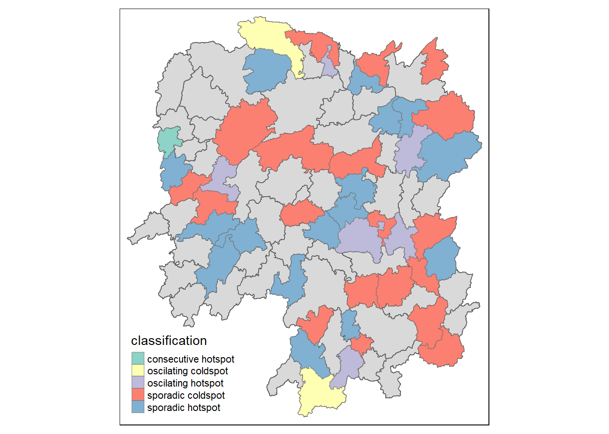

pacman::p_load( sf, sfdep, tmap, tidyverse, knitr)In-class_Ex2
1 Getting Started
1.1 Installing and Loading the R Packages
FiveR packages will be used for this in-class exercise, they are: sf, sfdep, tmap, tidyverse, and knitr.
2 The Data
For the purpose of this in-class exercise, the Hunan data sets will be used. There are two data sets in this use case, they are:
Hunan, a geospatial data set in ESRI shapefile format, and
Hunan_2012, an attribute data set in csv format.
3 Getting Data in R Environment
3.1 Importing geospatial data
hunan <- st_read(dsn = "data/geospatial", layer = "Hunan")Reading layer `Hunan' from data source
`W:\widyayutika\ISSS624\In-class_Exercise\In-class_Ex2\data\geospatial'
using driver `ESRI Shapefile'
Simple feature collection with 88 features and 7 fields
Geometry type: POLYGON
Dimension: XY
Bounding box: xmin: 108.7831 ymin: 24.6342 xmax: 114.2544 ymax: 30.12812
Geodetic CRS: WGS 843.2 Importing attribute table
hunan2012 <- read_csv("data/aspatial/Hunan_2012.csv")3.3 Combining both data frame by using left join
hunan_GDPPC <- left_join(hunan,hunan2012)%>%
select(1:4, 7, 15)In order to retain the geospatial properties, the left data frame must be the sf data.frame(i.e. hunan)
4 Deriving Continuity Spatial Weights
5 Deriving Continuity Spatial Weights: Queen’s Method
In the code below, queen method is used to derive the contiguity weights.
wm_q <- hunan_GDPPC %>%
mutate(nb = st_contiguity(geometry),
wt = st_weights(nb, style = "W"),
.before=1)Notes: ,before1 -> put nb and wt at the front of the tibble dataset
5.1 Computing local Moran’s I:
lisa <- wm_q %>%
mutate(local_moran = local_moran(
GDPPC, nb, wt, nsim = 99),
.before = 1) %>%
unnest(local_moran)pacman::p_load( sf, sfdep, tmap, tidyverse, knitr, plotly)GDPPC <- read_csv("data/aspatial/Hunan_GDPPC.csv")5.2 Creating a Time Series Cube
GDPPC_st <- spacetime(GDPPC, hunan, .loc_col ="County",
.time_col ="Year")Note: spacetime is used to create a spacetime cube.
is_spacetime_cube(GDPPC_st)[1] TRUE5.3 Identifying Neighbours and Derive Inverse Distance Weights
GDPPC_nb <- GDPPC_st %>%
activate("geometry") %>%
mutate(nb =include_self(st_contiguity(geometry)),
wt = st_inverse_distance(nb,geometry,
scale = 1,
alpha=1),
.before = 1) %>%
set_nbs("nb") %>%
set_wts("wt")Notes:
activate() of dplyr package is used to activate the geometry context.
mutate() of dplyr package is used to create two new columns nb and wt.
Then, we will activate the data context again and copy over the b and wt columns to each time-slic using set_nbs () and set_wts()
5.4 Computing Gi*
gi_stars <- GDPPC_nb %>%
group_by(Year) %>%
mutate(gi_star = local_gstar_perm(
GDPPC, nb, wt)) %>%
tidyr::unnest(gi_star)5.5 Performing Emerging Hotspot Analysis
ehsa <- emerging_hotspot_analysis(
x = GDPPC_st,
.var = "GDPPC",
k = 1,
nsim = 99
)5.6 Visualization
hunan_ehsa <-hunan %>%
left_join(ehsa,
by= join_by(County==location))
ehsa_sig <- hunan_ehsa %>%
filter(p_value <0.05)
tmap_mode("plot")
tm_shape(hunan_ehsa) +
tm_polygons()+
tm_borders(alpha=0.5)+
tm_shape(ehsa_sig)+
tm_fill('classification')+
tm_borders(alpha=0.4)